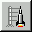
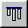

| Menu | Button | Description |
| Test / Start Application |  | Starts the application. |
| File / New | Creates a new, empty window spec. | |
| File / Load | Opens a dialog to load a window spec from a class
(a classes' #windowSpec method) |
|
| File / Save | Saves the current window spec and (if modified) the help spec. | |
| Edit / Cut | Cuts the selected item(s) and places it to the clipboard. | |
| Edit / Copy | Copies the selected item(s) to the clipboard. | |
| Edit / Paste | Pastes the contents of the clipboard. | |
| Edit / Delete | Delete the selected item(s). | |
| Edit / Move / Up | Moves the selected widget one step up. | |
| Edit / Move / Down | Moves the selected widget one step down. | |
| Edit / Move / Into | Moves the selected widget into next widget as child widget. | |
| Edit / Move / Out | Moves the selected widget out of its parent widget. | |
| Align / Left | Aligns the selected widgets to the left edge of the dominant widget. | |
| Align / Right | Aligns the selected widgets to the right edge of the dominant widget. | |
| Align / Left & Right | Aligns the selected widgets to the right and left edge of the dominant
widget.
|
|
| Align / Top |  | Aligns the selected widgets to the top edge of the dominant widget.
|
| Align / Bottom | Aligns the selected widgets to the bottom edge of the dominant widget.
|
|
| Align / Top & Bottom | Aligns the selected widgets to the top and bottom edge of the dominant widget. | |
| Settings / Canvas | Shows or hides the canvas window. | |
| Settings / Gallery | Shows or hides the gallery window. | |
| Changes the position of the selected widgets to the left. | ||
| Changes the position of the selected widgets to the right. | ||
| Changes the position of the selected widgets to the top. | ||
| Changes the position of the selected widgets to the bottom. | ||
| Edit / Open Widget Documentation | Opens a HTML-browser on the documentation file of the selected widget. | |
Further, there are functions from the menu:
| File Menu | Description |
| File / Load Subspec | Opens a dialog to load a sub spec from a class. |
| File / Save As | Opens a dialog to select or create a class and selector in order to save current window spec. |
| File / Pick An Window Spec | Changes the cursor to cross hair for moving it over another interface application to load its window spec. |
| File / Show Window Spec | Opens a Workspace showing the current window spec. |
| File / Browse Class | Opens a System Browser on current class and selector. |
| File / Browse Aspect Methods | Opens a System Browser to browse the aspect methods. |
| File / Exit | Exits the GUI Painter. |
| Edit Menu | Description | |
| Edit / Undo | Reverses last edit action. | |
| Edit / Paste Without Changing Layout | Pastes the widgets of the clipboard without a changing of their layout. | |
| Edit / Dimension / Default Extent | Sets the selected widgets to their default extent. | |
| Edit / Dimension / Default Width | Sets the selected widgets to their default width. | |
| Edit / Dimension / Default Height | Sets the selected widgets to their default height. | |
| Edit / Dimension / Copy Layout | Copies the layout of the selected widgets. | |
| Edit / Dimension / Copy Extent | Copies the extent of the selected widgets. | |
| Edit / Dimension / Paste Layout | Sets the layout of the selected widgets to the last copied layout. | |
| Edit / Dimension / Paste Extent | Sets the extent of the selected widgets to the last copied extent. | |
| Edit / Dimension / Paste Width | Sets the width of the selected widgets to the width of the last copied layout/extent. | |
| Edit / Dimension / Paste Height | Sets the height of the selected widgets to the height of the last copied layout/extent. | |
| Edit / Inspect View | Opens an inspector on the view object of the selected widget. | |
| Edit / Inspect Spec | Opens an inspector on the spec object of the selected widget. | |
| Align Menu | Description |
| Align/Centered Horizontal | Aligns the selected widgets horizontally to the center of the dominant widgets. |
| Align / Centered Vertical | Aligns the selected widgets vertically to the center of the dominant widgets. |
| Align / Centered Horizontal in Frame | Centers the selected widgets horizontally in their contained widget. |
| Align / Centered Vertical in Frame | Centers the selected widgets vertically in their contained widget. |
| Align / Spread Horizontal | Sets the horizontal spaces between the selected widgets as the same. |
| Align / Spread Vertical | Sets the vertical spaces between the selected widgets as the same. |
| Generate Menu | Description |
| Generate / Aspect Methods | Generates aspect methods in the instance protocol of the application class for those aspect selectors of the widgets which you have defined in the entry fields. |
| Generate / Hook Methods | Generates startup/release methods. (#closeRequest, #postBuildWith:, #postOpenWith:) |
| Test Menu | Description |
| Geometry Test/Set Mode | Toggles the geometry test/set mode in order to define ratios
of variable panels, and to check the effect of relative geometry specifications.
(After switching to that mode the ratios of contained variable panels can be set with the mouse. Also, by resizing the window, the effect of any relative geometry specifications can be checked. Finally, use this to change the default window size.) |
| Settings Menu | Description |
| Settings / Undo Manager... | Opens a dialog to reverse a certain number of last edit actions. (The GUI Painter maintains a history of edit actions.) |
| Settings / Grid Manager... | Opens a dialog to show/hide the grid points or to change the distances
between them.
(As support to the align functions, the GUI Painter offers a snap-to-grid mechanism for immediate aligning the widgets after placing. The widgets will also be snapped to the grid when moving or sizing. The grid points can be hidden; the default value of the distance between horizontal and vertical grid lines is 10@10.) |
| Settings / Redefine Aspect Methods | Turns on/off the permission of redefinition of the aspect methods.
(If there are some aspect methods already defined in a superclass of the application class, you are better to switch off this settings.) |
| Settings / Use Sketch as Background | Opens a dialog to load a (.TOP) sketch file as a background image.
These ".TOP" files are generated by some digital notebooks (pen-tables), when pen motions are stored offline in a file of the notebook. Exept uses this to import sketches as drawn during discussion sessions as an implementation guideline. At least the Tevion MD85276 digital notebook uses this format. |
 Copyright © 1998 eXept Software AG, all rights reserved
Copyright © 1998 eXept Software AG, all rights reserved